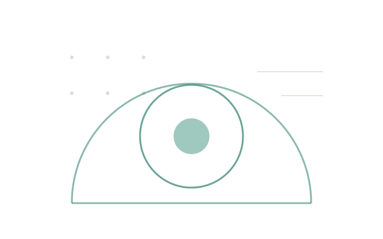

我最初使用 Agent，只是为了让它辅助完成一些日常任务。后来把越来越多的工作交给它，也逐渐发现：它完成一件事，不等于任务被可靠地完成。AI-OS 是我将这些认识转化为工程实践的主线项目。
工作经历
按时间倒序
-
2023.06 — 至今
项目设计与实现推进
个人项目

我最初使用 Agent，只是为了让它辅助完成一些日常任务。后来把越来越多的工作交给它，也逐渐发现：它完成一件事，不等于任务被可靠地完成。AI-OS 是我将这些认识转化为工程实践的主线项目。
按时间倒序
2023.06 — 至今
个人项目